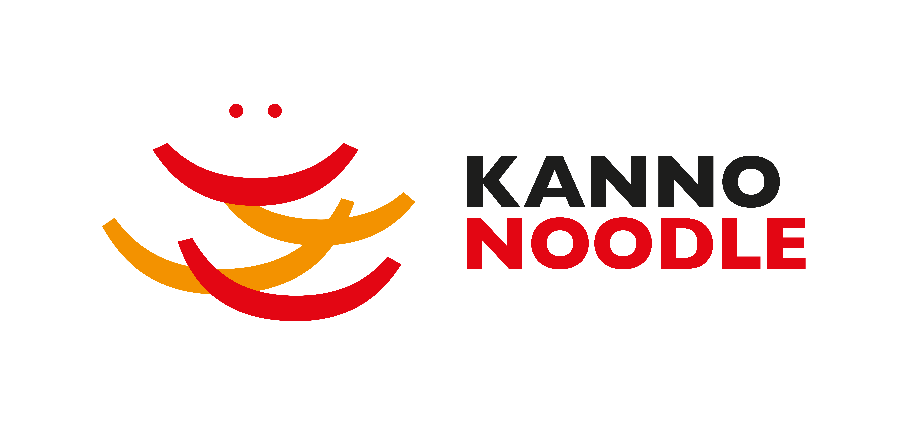
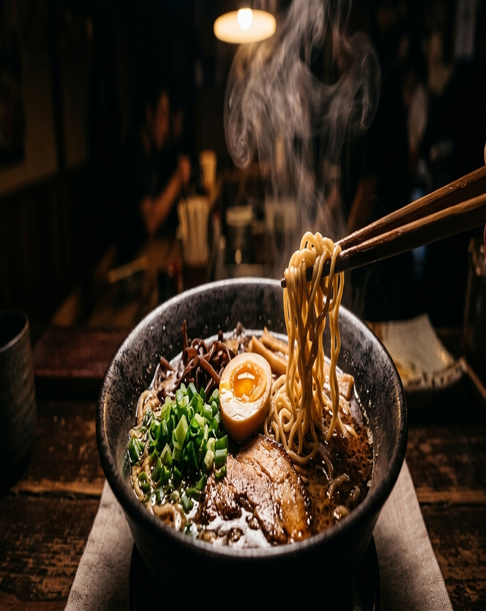

01 · Manifesto
麺
The
art of Asian
noodles.
Tokyo · 1949 — Warsaw · today

@kannonoodle
Post 01 · 4:5Manifesto
The art of Asian noodles. Three generations of Japanese noodle craft, now made in Europe. Welcome to Kanno.
#kannonoodle #ramen #udon #soba #madeinpoland #japanesefood
05 · Words
忍耐
— On craft
Patience is an ingredient.
House motto · Kanno workshop
Post 05 · 4:5Manifesto
Patience is an ingredient. Some of our doughs rest for 18 hours before they ever see a cutter. The clock doesn’t cost anything. The texture does.
#slowfood #craft #noodlemaking #kannonoodle
Post 08 · 4:5Manifesto
Born in Tokyo. Made in Poland. The recipe and the discipline came from the Kanno family in Japan. The factory, the team and the logistics are on EU soil. The result: authentic Japanese noodles, fresh to your kitchen.
#tokyotowarsaw #madeinpoland #japanesefood #joint-venture
 10 · Brand · 77 years
七十年
10 · Brand · 77 years
七十年
Seventy-seven
years of one
recipe.
No shortcuts. No factory line. Three generations, one dough, one discipline.
Post 10 · 9:16Manifesto
Seventy-seven years. One recipe. The Kanno noodle has been refined, never reinvented. Same flour. Same hydration logic. Same resting times. Three generations of patience, packed into every kilogram.
#kannonoodle #since1949 #craftfood #japanesefood
麺
12 · Sign-off
Hungry?
Let’s
cook together.
kanno.pl · office@kanno.pl
Post 12 · 4:5Closing
Hungry? Restaurants, distributors, food-service partners — we answer every inquiry. Drop us a line at office@kanno.pl or DM us here.
#horeca #b2b #ramen #udon #soba #kannonoodle
02 · Heritage
創業
Founded in Tokyo
1949
The year a small family workshop in Tokyo began pulling noodles by hand.
Kanno · est. 1949
Tokyo → Warsaw
Post 02 · 4:5Heritage
1949. The Kanno family begins producing Japanese noodles in a Tokyo workshop. Seventy-seven years later, the recipe still hasn’t changed.
#since1949 #tokyo #heritage #ramen #japanesecraft
03 · Timeline
物語
From Tokyo
to your kitchen.
1949
Kanno family opens its first noodle workshop in Tokyo.
1978
Second generation joins the bench.
2005
Yoshio Kanno takes over the business.
2018
Joint venture founded in Poland.
2026
Shipping fresh across the EU.
kanno.pl
Post 03 · 9:16Story
A short history. From a Tokyo workshop in 1949 to a production line in central Poland today — five moments in the Kanno story.
#kannostory #japanesefood #familybusiness #ramen #tokyo

First generation
1949

Second generation
1978

Third generation
2005
Post 06 · 9:16Heritage
Three generations. The Kanno workshop has been passed from one pair of hands to another since 1949. Today, Yoshio Kanno leads the family business — and the same dough still goes through the same routine.
#familybusiness #threegenerations #kannostory #tokyo

04 · What is ramen?
ラーメン
A wheat
noodle, served
in broth.
Gauge · 1.4 mm
Origin · Japan
Post 04 · 4:5Education
What is ramen? A Japanese wheat noodle, made with kansui (alkaline mineral water) for that springy chew. Served in broth — shio, shoyu, miso or tonkotsu — and topped however your kitchen likes.
#whatisramen #ramen101 #ラーメン #japanesefood

07 · What is udon?
うどん
Thick. Chewy.
Quietly filling.
Gauge · 2.5–4 mm
Origin · Japan
Post 07 · 4:5Education
What is udon? A thick Japanese wheat noodle, soft and chewy, served hot in dashi or cold with dipping sauce. The hydration is higher than ramen. The bite is gentler. The comfort is real.
#whatisudon #udon101 #うどん #japanesefood

09 · What is soba?
そば
A buckwheat
noodle. Earthy,
cool, nutty.
Buckwheat · 80%+
Origin · Japan
Post 09 · 4:5Education
What is soba? A thin Japanese noodle made primarily from buckwheat flour — nutty, slightly grassy, and best served cold with tsuyu or hot in a clear broth. Naturally darker than wheat noodles. Naturally lower glycemic.
#whatissoba #soba101 #そば #buckwheat
11 · Quality
品質
IFS
Japanese recipe.
European discipline.
Post 11 · 4:5Education
IFS Food certified. The recipe is Japanese. The food-safety regime is European. Every shipment leaves with full traceability — flour to fork.
#ifsfood #foodsafety #qualityfood #b2b #horeca